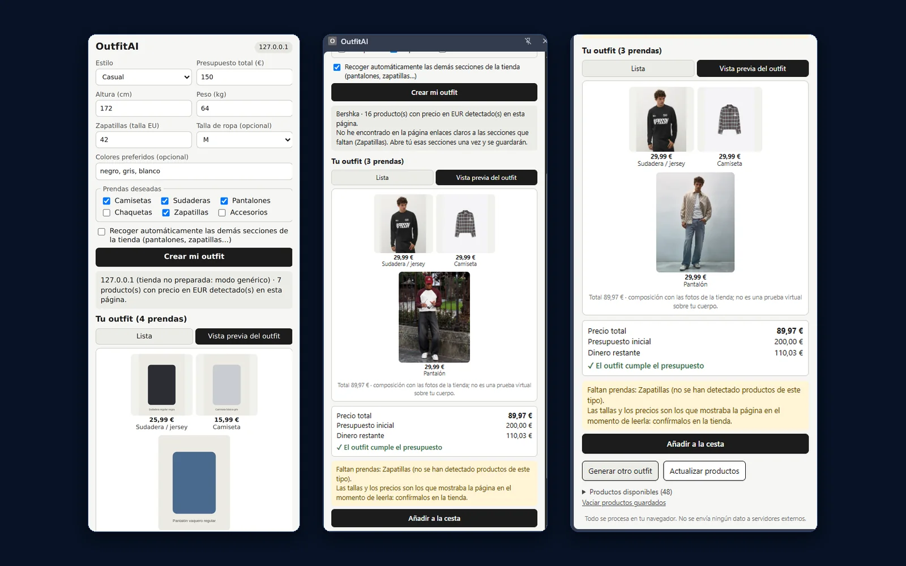
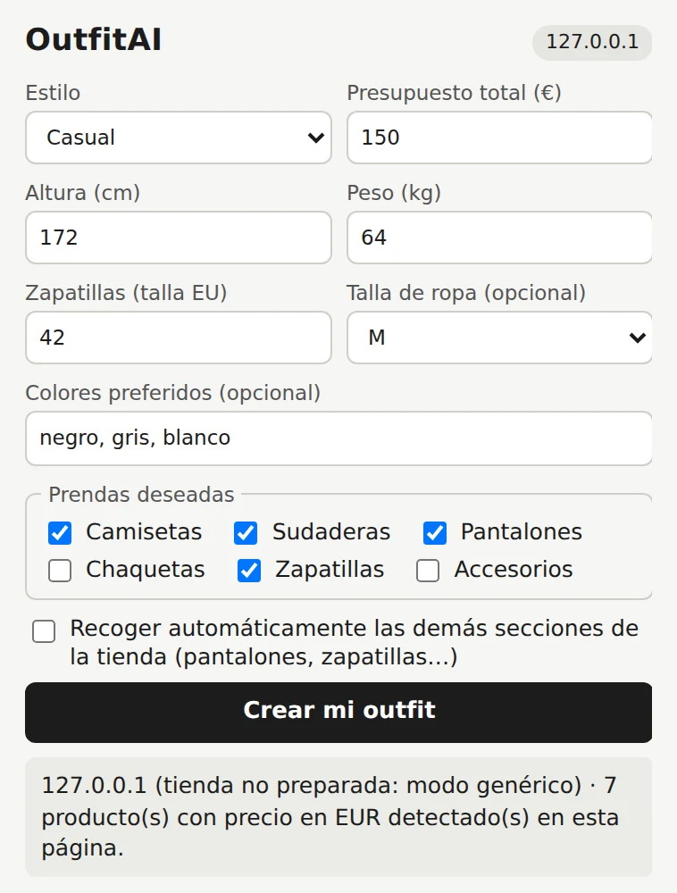
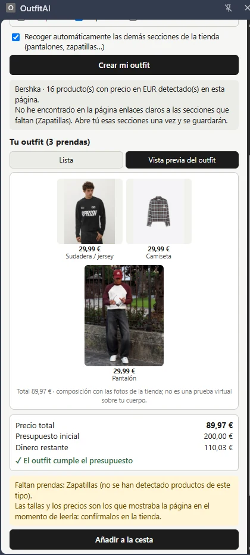
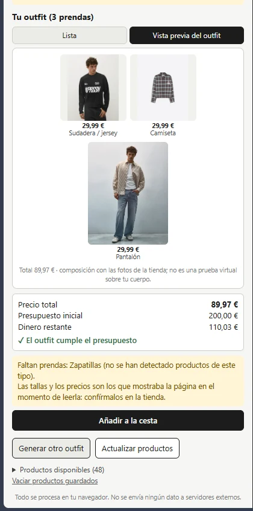
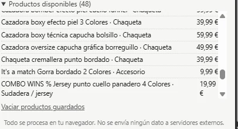

Outfit AI
Prototipo que combina los productos de la tienda que estás viendo en outfits que respetan tu presupuesto. Se ejecuta en el navegador, sin servidor y sin modelos de IA: la selección es un algoritmo propio.

El problema
Montar un conjunto en una tienda online obliga a ir de sección en sección, apuntando precios para no pasarse del presupuesto.
La necesidad
Una camiseta en una página, un pantalón en otra, unas zapatillas en una tercera, y la suma hecha a mano. Además hay que comprobar tallas y que los colores combinen.
Qué propone Outfit AI
Leer los productos que la propia página ya muestra y proponer combinaciones completas con el total, lo que sobra del presupuesto y el estado de la talla de cada prenda.
La solución
El recorrido completo. La extensión no se ejecuta en ninguna web hasta que se pulsa su icono.
- Abres una tiendaUn listado de productos o una ficha, desplazándote hasta el final para que la tienda cargue los productos.
- Pulsas el iconoOutfitAI se abre en el panel lateral de Chrome y no se cierra al hacer clic en la página.
- Indicas tus preferenciasEstilo, presupuesto, tallas, colores y prendas deseadas. Se guardan solas.
- Lee los productosLos de la página y, con tu permiso, los de otras secciones de la misma tienda.
- Genera un outfitUna prenda por categoría, sin superar el presupuesto, con el total y el dinero restante.
- Lo revisasEn lista o en vista previa. Puedes pedir otro outfit, o probar el añadido a la cesta, que es experimental.
Funcionalidades
Lo que hace el prototipo y lo que todavía no está comprobado.
Lectura de productos
Combina datos estructurados (JSON-LD) y tarjetas visibles. Solo precios en euros: descarta otras monedas, precios tachados o ambiguos y lo cuenta.
Preferencias
Nueve estilos, presupuesto, talla de zapatillas y de ropa, colores y seis categorías de prenda. La altura y el peso se guardan, pero no se usan para deducir tallas.
Generador con presupuesto
Búsqueda con poda que nunca supera el presupuesto, con el total y el restante siempre cuadrados y sin repetir categorías. Puntúa estilo, colores y tallas disponibles.
Recogida de secciones
Si faltan prendas, abre hasta seis secciones de la tienda en pestañas en segundo plano, lee los precios y las cierra. Pide permiso por tienda.
Vista previa del outfit
Compone las fotos de la tienda como se llevan puestas, con precio y total. Es una composición, no una prueba virtual sobre el cuerpo.
Tallas sin inventar
Muestra si la ficha lista tu talla o dice «Talla por comprobar». Si la ficha indica que no la tiene, esa prenda se excluye. No elige ninguna talla por ti.
Productos guardados
Conserva hasta 400 productos vistos durante 7 días para combinar lo de varias secciones. Se pueden vaciar y cada prenda muestra cuándo se vio su precio.
Sesión persistente
El outfit, la vista elegida y el estado de la cesta se restauran al reabrir el panel durante 24 horas.
Añadir a la cesta (experimental)
Abre cada ficha, elige tu talla, pulsa «Añadir» y comprueba la cesta real. Muestra el progreso, permite detenerlo y no cierra las fichas que no pudo confirmar.
Capturas reales
Las capturas son una demostración del prototipo y no acreditan una integración con ninguna tienda. El formulario se ha capturado con valores ficticios de demostración y una tienda simulada en local.




Arquitectura y tecnologías
Sin dependencias de ejecución. La lógica de cálculo está separada de la interfaz para poder probarla desde Node.
- Icono de la extensiónAbre el panel lateral
- Panel lateralPreferencias, estado y resultados
- Lector de la páginaSe inyecta solo en la pestaña activa y bajo demanda
- Núcleo de cálculoPrecios, categorías y generador de outfits
- chrome.storage.localPreferencias, productos y sesión
- background.jsConfigura el panel lateral para que se abra al pulsar el icono.
- popup.html, popup.css y popup.jsInterfaz del panel y orquestación: permisos, recogida de secciones, vista previa, sesión y flujo de la cesta.
- content.jsExtractor inyectado con
chrome.scripting. Trata la página como contenido no confiable: solo usatextContent,JSON.parsey URL validadas, nunca HTML. Su punto de extensión para adaptadores por tienda está vacío a propósito. - outfit-core.jsMódulo sin dependencias compartido por la extensión y las pruebas: lectura de precios, categorías, colores, validaciones y generador.
- test/Cuatro archivos: núcleo, extractor, flujo del panel y Chromium real contra una tienda simulada.
Privacidad y permisos
La extensión no hace peticiones de red propias ni usa claves, cuentas o servicios de terceros.
Qué se guarda en tu navegador
- Preferencias: estilo, presupuesto, altura, peso, tallas, colores y prendas
- Productos detectados: hasta 400 durante 7 días
- Sesión del panel: outfit y estado durante 24 horas
Todo en chrome.storage.local, con opción de vaciar los productos guardados.
Qué hace con las tiendas
Lee la pestaña activa solo cuando se abre la extensión. Para recoger secciones o añadir a la cesta abre páginas de la tienda en pestañas, como una navegación normal: la tienda registra esas visitas.
Durante el añadido a la cesta instala en la ficha un observador de solo lectura de las peticiones: anota método, ruta sin parámetros y estado, sin leer cuerpos, cabeceras ni cookies.
storage, activeTab, scripting y sidePanel. No hay permisos de sitio obligatorios ni content scripts permanentes: el acceso a cada tienda es opcional, se pide por dominio y, si se rechaza, la extensión sigue funcionando con la página actual.Retos técnicos
Varios de estos problemas aparecieron al usar la extensión en una tienda real y están documentados en el historial de cambios del proyecto.
Leer tiendas sin conocer su estructura
Un modo genérico combina JSON-LD y tarjetas visibles. No hay adaptadores por tienda porque ninguna estructura se ha verificado, y la extensión no depende de selectores inventados.
Garantizar el presupuesto
La búsqueda descarta cualquier combinación que, con la opción más barata del resto, ya no cabría. Una prueba aleatoria con 300 catálogos comprueba que el total nunca supera el presupuesto y que las cuentas cuadran.
Precios y nombres poco fiables
Formatos como 1.299,00 €, precios partidos en varios elementos y precios tachados. En una página de Bershka usada como referencia, el texto alternativo de una foto describía un look completo, así que el nombre se toma del enlace o de la URL. Es una decisión de la lectura genérica de productos, no una compatibilidad verificada con Bershka.
Chrome oculta la URL sin permiso
Sin permiso sobre la pestaña, tab.url llega vacía y el panel decía que la página no era una tienda, incluso en una página de Bershka usada como referencia. Ahora distingue ese caso, lo explica y ofrece pedir el permiso de la tienda. Este flujo de permisos no está verificado en tiendas reales.
Automatizar la cesta sin dar falsos positivos
Se reescribió porque la versión anterior cerraba fichas siempre, confirmaba por cambios de texto y podía añadir duplicados. Ahora espera a la respuesta de la tienda, solo confirma con una petición aceptada y no cierra fichas hasta comprobar la cesta real.
Panel lateral en lugar de popup
Un popup se cierra al perder el foco, y con él el proceso en curso. El panel lateral sigue abierto y la sesión se restaura al volver.
Resultados y pruebas
Última ejecución de npm test: 33 pruebas.
Pruebas automatizadas superadas
- 19 pruebas unitarias del núcleo: precios, categorías, tallas, presupuesto, generador y clasificación de resultados de la cesta
- 3 pruebas en Chromium real con la extensión cargada, contra una tienda simulada en local
No ejecutadas en la última pasada
- 11 pruebas de extractor y de flujo del panel, que requieren jsdom y se omiten si no está instalado
Estado y límites
Estado actual
Prototipo v0.5.1, en modo desarrollador. No está publicado en Chrome Web Store. Las capturas son una demostración: muestran la lectura del listado y el outfit, pero no equivalen a una verificación ni a una integración con ninguna tienda.
Limitaciones conocidas
- Solo precios en euros
- La categoría se deduce del nombre o la URL
- La detección de tallas agotadas es heurística
- Si la tienda carga precios con scripts que no aparecen en el DOM, no se detecta nada
Posibles mejoras (no implementadas): un adaptador verificado para Bershka, probar el añadido a la cesta en una ficha real y añadir iconos propios.